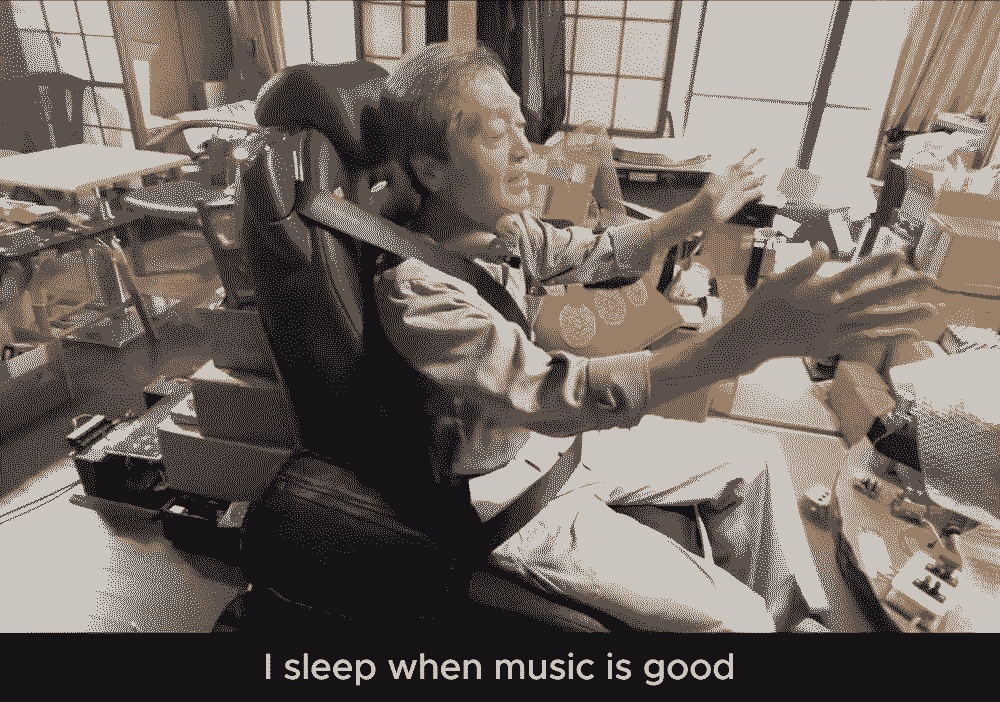

Greetings traveler.
This is the in-depth wiki for femishonuga.com. navigate by clicking the tabs above ⬆ . This site is mainly meant to be viewed on desktop.
see the sitemap for a full list of the pages on this wiki
Femi is a Providence, RI–based architect and sound artist from New York working with handmade electronic and acoustic instruments to examine the cybernetics of gender, race, and culture through site-specific ritual performance. His work explores the intersections of acousmatics and cultural anthropology through architectural design as a radical and experimental practice. He is particularly interested in generative systems, spatial audio, sonic acts as ritual, and the poetics of sound technology. Femi approaches architecture as a political intervention enacted through vibration, embodied experience, and spatial interaction. Since 2018, he has performed solo and collaboratively under the moniker “sadnoise.” Notable performances include the Sonic Acts Biennial (2026, NL), Waterworks Festival (2024, MA), and Ende Tymes (2022, NY), among others.
{kind=link}
